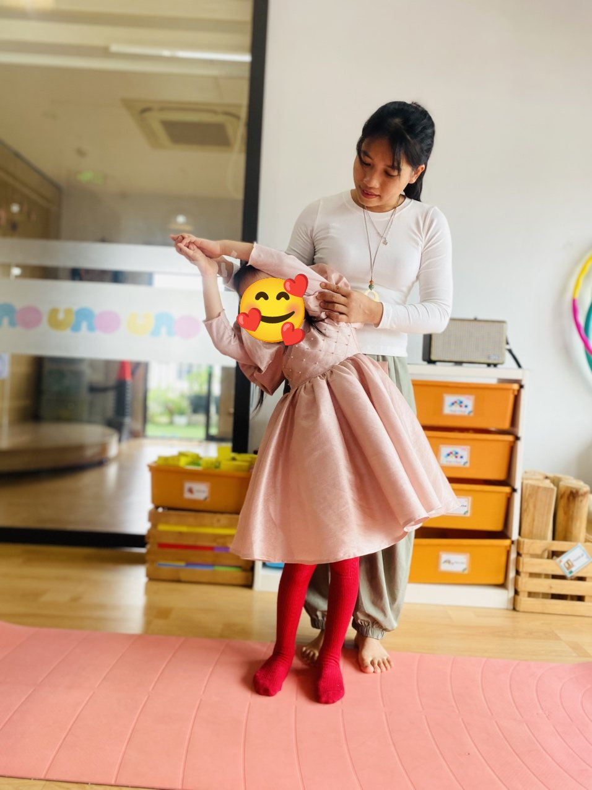

Dành cho HLV
Kỹ năng giao tiếp cùng trẻ trong lớp yoga: nói thế nào để con muốn nghe

Một bạn nhỏ đứng ở cửa phòng tập, tay nắm chặt vạt áo mẹ.
Cô có thể gọi to: “Vào đây con, nhanh lên, các bạn đợi kìa!” Nhiều khi cách đó lại làm con lùi thêm một bước.
Sophia thường làm khác. Cô đi tới, ngồi xuống thấp hơn con một chút. Không nói gì vội. Thở ra một hơi dài. Rồi mới hỏi nhỏ: “Con muốn đứng đây xem các bạn một lúc không? Cô để sẵn chiếc chuông cho con nhé.”
Giao tiếp với trẻ không bắt đầu từ câu chữ. Nó bắt đầu từ hơi thở, từ ánh mắt, từ khoảng cách giữa người lớn và đứa trẻ. Bài này cô gom lại những điều nhỏ mà cô dùng mỗi ngày trên thảm tập.
Hơi thở của người lớn là lời nói đầu tiên
Trẻ nhỏ chưa tự điều hòa được cảm xúc của mình. Con mượn sự bình tĩnh của người lớn bên cạnh. Các nhà tâm lý học gọi đó là đồng điều hòa: hệ thần kinh của người lớn bình an thì hệ thần kinh của con có chỗ để lắng lại (Siegel và Bryson, 2011).
Vậy nên trước một tình huống khó, bạn khóc, bạn giận, bạn không chịu tập, việc đầu tiên cô làm không phải là nói. Cô thở. Ba hơi. Thở ra dài hơn hít vào. Thầy cô thử cùng cô ở đây:
🫁 Ba hơi thở trước khi nói
Chưa đầy nửa phút. Nhưng giọng mình sẽ khác. Tay mình sẽ khác. Và đứa trẻ trước mặt cảm được ngay.
Ngang tầm mắt, gọi tên, chạm có hỏi
Ngang tầm mắt. Cô ngồi xuống, quỳ xuống, hoặc ngồi trên thảm. Một người lớn đứng cao nói xuống là một bức tường. Một người lớn ngồi ngang tầm là một người bạn.
Gọi tên con. Không phải “bạn áo đỏ kia”. Là “Bông ơi”. Ngay buổi đầu, cô cố gắng nhớ tên cả lớp, có khi bằng một trò chơi: mỗi bạn nói tên mình kèm một con vật và làm tư thế con vật ấy.
Chạm có hỏi. “Cô đặt tay lên lưng con nhé?” Hôm nay con gật, mai con lắc cũng được. Hỏi trước khi chạm là một bài học về cơ thể mình thuộc về mình. Bài học ấy, các con mang theo rất lâu.


Nói điều con nên làm, thay vì điều con không được làm
“Đừng chạy!” Đứa trẻ nghe thấy chữ “chạy”. Bộ não đang lớn của con cần biết phải làm gì, không chỉ biết điều bị cấm. “Chân đi chậm như mèo nhé” cho con một hình ảnh để làm theo.
Đây cũng là giới đầu tiên của yoga, ahimsa, bất bạo động, được sống trong từng câu nói. Một câu dọa, một lời so sánh, một cái nhãn “con hư quá” không làm đau thân thể, nhưng làm đau một nơi sâu hơn. Nghiên cứu theo dõi nhiều năm cho thấy những lời quát mắng nặng nề từ cha mẹ gắn với nhiều vấn đề hành vi và trầm cảm hơn ở tuổi thiếu niên (Wang và Kenny, 2014).
Bấm vào từng thẻ để thấy cô đổi câu như thế nào:
Khen điều con làm, không khen con là gì
“Con thông minh quá”, “con giỏi quá” nghe thì ấm áp. Nhưng các thí nghiệm của Claudia Mueller và Carol Dweck (1998) cho thấy trẻ được khen là thông minh lại dễ né thử thách hơn, sợ làm sai hơn, so với trẻ được khen vì đã cố gắng.
Trong lớp yoga, cô khen điều mình nhìn thấy, cụ thể: “Con thở ra dài ghê.” “Con ngã rồi đứng dậy làm lại.” “Con nhường thảm cho bạn.” Không cần hô to. Đôi khi chỉ một nụ cười và cái gật đầu là đủ.
Cô cũng không dùng kẹo hay phần thưởng để “mua” sự hợp tác. Một nghiên cứu kinh điển cho thấy trẻ được hứa thưởng cho việc vẽ tranh lại ít tự vẽ hơn khi không còn phần thưởng (Lepper, Greene và Nisbett, 1973). Niềm vui tự thân của việc vận động, việc được thở, việc được nằm yên, đã là phần thưởng.
Lắng nghe: gọi tên cảm xúc, rồi chờ
Khi một bạn giận, buồn, sợ, điều con cần đầu tiên là được hiểu. Daniel Siegel gọi cách làm này là “gọi tên để làm dịu” (name it to tame it). John Gottman, sau nhiều năm nghiên cứu các gia đình, gọi đó là huấn luyện cảm xúc: người lớn nhận ra cảm xúc của con, gọi tên nó, rồi mới cùng con tìm cách (Gottman, 1997).
Cô thường nói: “Con đang tức vì bạn lấy bóng của con, phải không?” Rồi im lặng. Đếm thầm ba giây. Cho con thời gian trả lời. Sự chờ đợi ấy, nhỏ thôi, nói với con rằng con quan trọng.
Marshall Rosenberg, người khởi xướng Giao tiếp phi bạo lực, có một cách rất giản dị: nói điều mình thấy, điều mình cảm thấy, điều mình cần, và một lời đề nghị rõ ràng (Rosenberg, 2003). Với trẻ nhỏ, cô rút gọn: “Cô thấy… Cô cần… Con có thể… không?”
Và đây là satya, chân thật, giới thứ hai. Cô nói thật với các con, bằng lời các con hiểu. Không dọa “con ma bắt”, không hứa điều mình không giữ.
Cho con lựa chọn
Trẻ con hợp tác hơn rất nhiều khi được chọn, dù chỉ là chọn nhỏ. Các nhà tâm lý học Edward Deci và Richard Ryan xem cảm giác được tự chủ là một trong ba nhu cầu gốc của con người (Deci và Ryan, 2000).
“Con muốn làm cây dừa hay cây thông?” “Mình chào mặt trời trước hay chơi đóng băng trước?” “Con nằm thư giãn ngửa hay nằm nghiêng?” Hai lựa chọn, cả hai đều ổn với cô. Con có quyền, cô vẫn giữ được nhịp lớp.
Nói theo độ tuổi
Cùng một ý, nói với bé ba tuổi và với bạn chín tuổi phải rất khác. Chọn độ tuổi để xem cô thường điều chỉnh thế nào:
🧒 Cách nói theo độ tuổi
Ngôn ngữ của trí tưởng tượng
Với trẻ nhỏ, câu chuyện là ngôn ngữ mạnh nhất. “Duỗi thẳng chân, gập người về trước” là một câu lệnh. “Mình là con gấu đi tìm mật ong dưới gốc cây” là một lời mời. Con không thấy mình đang tập. Con thấy mình đang chơi.
Khuôn mặt, giọng nói, đôi tay của cô cũng là một phần câu chuyện. Mắt mở to khi chú chim bay tới. Giọng thì thầm khi khu rừng đi ngủ. Các con nhìn trước khi nghe.

Giao tiếp với bố mẹ, cầu nối của mọi điều
Một tiết yoga 30 phút chỉ là một phần nhỏ trong ngày của con. Phần lớn còn lại ở nhà. Vì thế cô luôn coi bố mẹ là người cùng dạy.
- Một tin nhắn ngắn sau buổi học, kể một điều cụ thể, thật: “Hôm nay bé tự đếm năm hơi thở con ong.”
- Một gợi ý nhỏ để làm ở nhà: ba hơi thở bóng bay trước khi ngủ, năm phút đi chân đất trên cỏ, xoa lưng cho con.
- Khi cần nói điều chưa ổn, cô nói riêng, nói điều mình thấy, không gán nhãn, và hỏi bố mẹ thấy ở nhà thế nào.
- Không hứa chữa bệnh. Yoga đi cùng giấc ngủ đủ, ăn uống lành, chơi ngoài trời, ít màn hình, nhiều ôm ấp. Đó là cả một lối sống, không phải vài tư thế.
Khi nào gợi ý bố mẹ hỏi ý kiến chuyên gia
Cô giáo yoga không chẩn đoán. Nhưng mình gặp con đều đặn, nên có khi mình thấy những dấu hiệu bố mẹ chưa để ý. Khi đó, cô nhẹ nhàng gợi ý gia đình hỏi bác sĩ nhi khoa hoặc chuyên gia tâm lý, phát triển trẻ em, nếu:
- Bé khoảng 2 tuổi mà gần như chưa nói được từ đơn, hoặc 3 tuổi chưa nói được câu ngắn.
- Bé hiếm khi nhìn vào mắt, không quay lại khi được gọi tên, ít chơi cùng bạn.
- Bé mất đi những kỹ năng đã từng có: lời nói, cách chơi, cách giao tiếp.
- Bé sợ hãi, lo âu, buồn bã kéo dài nhiều tuần, ảnh hưởng tới ăn, ngủ, đi học.
- Có dấu hiệu bé bị tổn thương: vết bầm không giải thích được, sợ hãi bất thường một người lớn.
Cách nói: riêng tư, ấm áp, mô tả điều mình thấy, không kết luận. “Mấy buổi nay cô thấy bé ít trả lời khi cô gọi tên. Ở nhà bố mẹ có thấy vậy không? Nếu cần, mình hỏi thêm bác sĩ cho yên tâm.” Với dấu hiệu trẻ bị bạo hành, thầy cô cần báo ngay cho nhà trường hoặc Tổng đài Quốc gia bảo vệ trẻ em 111.
Điều cô học được
Có những bạn nhỏ cần vài buổi chỉ ngồi ở góc phòng nhìn. Cô không gọi, không giục. Mỗi buổi chỉ mỉm cười và để chiếc chuông gần chỗ con hơn một chút.
Rồi đến một ngày, con tự bước ra giữa vòng tròn. Không ai bảo cả.
Cô hiểu ra rằng giao tiếp với trẻ, nhiều khi, là biết chờ. Biết im lặng. Biết để lại một cánh cửa mở.
Trẻ con không nhớ mình đã nói gì. Con nhớ mình đã khiến con cảm thấy thế nào.
🌿 Muốn học cách nói chuyện với các con như thế này?
Trong khóa Đào tạo Huấn luyện viên Yoga trẻ em, Sophia hướng dẫn kỹ cách dẫn lời, kể chuyện bằng tư thế, xử lý cảm xúc của trẻ trong lớp và giao tiếp với phụ huynh, có thực hành và góp ý trực tiếp.
Đọc tiếp: Kỹ năng đứng lớp yoga trẻ em, Tốt nghiệp HLV 30 giờ rồi, tìm lớp dạy ở đâu?, Ứng dụng yoga cân bằng phục hồi cho bé hay cáu giận, khóc nhè và Ứng dụng yoga cân bằng phục hồi cho bé nhút nhát, thiếu tự tin.
📚 Tài liệu tham khảo
- Siegel DJ, Bryson TP. The Whole-Brain Child. Delacorte Press, 2011.
- Gottman J. Raising an Emotionally Intelligent Child. Simon & Schuster, 1997.
- Faber A, Mazlish E. How to Talk So Kids Will Listen & Listen So Kids Will Talk. Rawson, Wade, 1980.
- Rosenberg MB. Nonviolent Communication: A Language of Life. PuddleDancer Press, 2003.
- Mueller CM, Dweck CS. Praise for intelligence can undermine children’s motivation and performance. Journal of Personality and Social Psychology, 1998;75(1):33–52.
- Lepper MR, Greene D, Nisbett RE. Undermining children’s intrinsic interest with extrinsic reward. Journal of Personality and Social Psychology, 1973;28(1):129–137.
- Deci EL, Ryan RM. The “what” and “why” of goal pursuits: human needs and the self-determination of behavior. Psychological Inquiry, 2000;11(4):227–268.
- Wang MT, Kenny S. Longitudinal links between fathers’ and mothers’ harsh verbal discipline and adolescents’ conduct problems and depressive symptoms. Child Development, 2014;85(3):908–923.
- Rowe MB. Wait time: slowing down may be a way of speeding up! Journal of Teacher Education, 1986;37(1):43–50.
- CDC. Learn the Signs. Act Early: mốc phát triển của trẻ. cdc.gov/actearly.
- Patañjali. Yoga Sutra, chương II, câu 30–36 (ahimsa, satya).